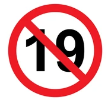

● Shake animation 만들기
흔들흔들
부들부들
● Animation을 이용한 창 흔들기

나이:
등록
● Turn animation 만들기
lunch_dining
● Spin animation 만들기
settings
settings
settings
settings
An animated element
An animated element
An animated element
An animated element